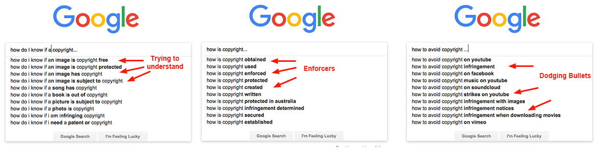
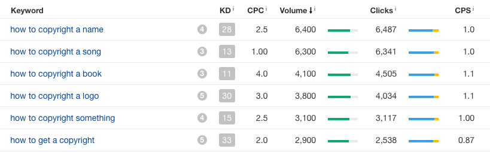
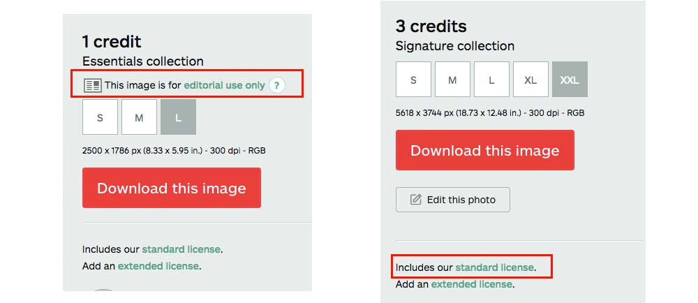
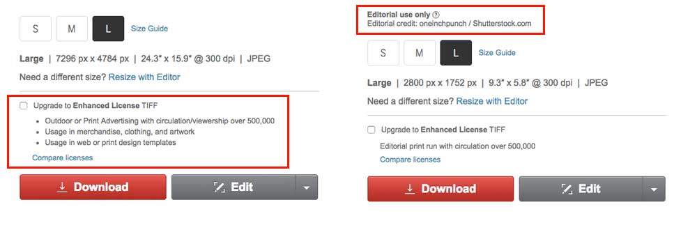
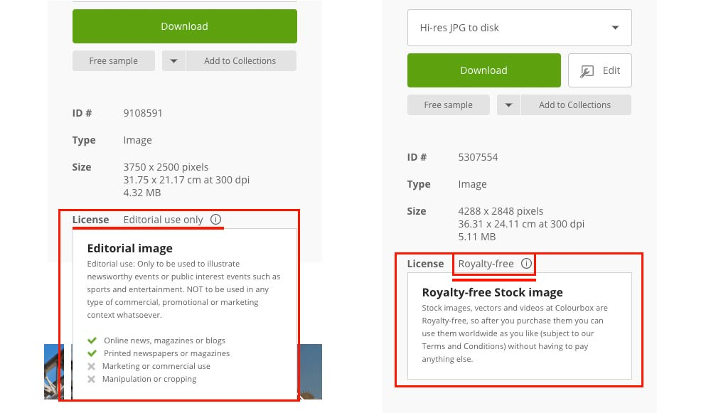
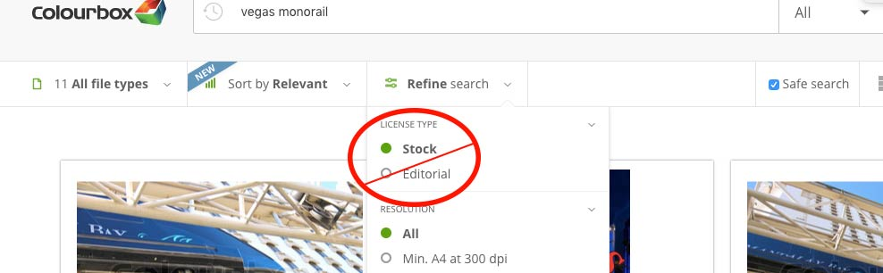
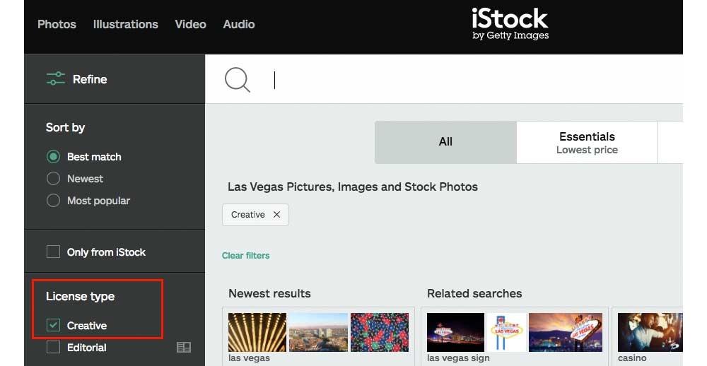

When I’m trying to come up with ideas for content development, I like to let Google autocomplete variations of phrases with keywords related to my subject matter. Doing this helps me understand the types of questions people are searching for regarding a particular topic. This is also a great way to develop FAQ content ideas for your website. While researching topics to cover about copyright issues & trying to dial into common concerns, I came across some interesting questions that Google autocomplete showed me people are searching. As you can see from the autocomplete variations below, there are a lot of people concerned about various aspects of copyright infringement. A fair amount of these searches are generated from people trying to better understand copyright laws & how they apply to what they are currently doing in their business or on their websites, such as how they are using imagery. Others are related to obtaining & enforcing copyrights for creative works, and even how to dodge particular copyright issues.
After looking through many variations of autocomplete suggestions like these, it seems that many more people are searching how to avoid problems with copyrights laws than those who are searching for how to enforce them. This could lead one to believe that there is a relatively small number of people scaring the hell out of a much larger group of people with the threat of some type of action against them. And, for good reason. Nobody wants to end up in a legal battle over the use of an image on a blog post. Looking further into the keyword volume, there are actually quite a few people looking for information on how to obtain a copyright for different creative works. This won’t be the focus of this post, but we’ll also briefly touch on a couple points in relation to that in the Q&A section.
The real focus here is on “how to avoid copyright infringement”, which a fair amount of people are also interested in and searching for (& probably many more long-tail variations).
So how do you avoid copyright infringement? The best rule of thumb I’ve learned up to this point is to assume everything is under copyright protection unless specifically stated that it is not. There’s a lot of widely held assumptions that you can use images in certain places and under certain circumstances, but many of these assumptions are simply false. Let’s look at a few more general rules you can follow that should help you avoid lawsuits & headaches down the road.
1. Know if you have permission
If you don’t know for sure if you have permission to use an image, and it’s not specifically stated somewhere that the image is for commercial use and/or royalty free, don’t use it. It’s not worth the potential risk. Some basic things about copyright law you should understand are:
- Copyright is automatic and when someone produces a creative work, ordinarily copyright applies.
- For further protection under the law, the creator of the work can register that work with the copyright office.
- The existence or nonexistence of the copyright symbol is not required nor does it mean that the copyright has not been registered at the U.S. Copyright Office.
2. Understand that most of what you do will likely be commercial in nature
As a marketer, pretty much everything you do for your own business (and for your clients) will be commercial in nature. It’s likely not worth trying to decipher if Fair Use might apply when it comes to using copyrighted information because more than likely, it won’t. There are exceptions to this, but even the exceptions are subject to a court’s interpretation of the copyright when deciding if the use was “fair” For example, using copyrighted elements in something like an infographic may be considered a “transformative” work because it takes on a new meaning & use. But even then, the amount of copyrighted work within it as well as a number of other factors would likely be considerations made by a court. This is why it’s better to err on the side of caution when it comes to commercial use of anything which you suspect may be copyrighted content.
3. Utilize stock imagery
The safest imagery you can use (outside of images you’ve shot or created yourself) will most likely come from paid stock sites. Using stock images can help you avoid costly legal fees related to copyright issues. Stock media companies have a financial interest in keeping their customers safe from ungrounded copyright claims. Obviously, it’s not good for their business if people try to start copyright lawsuits against people who’ve legally obtained & paid for stock media, so it’s in their best interest to protect their customers. This is done through agreements with the photographers & creatives that work with them & produce the media for sale on their sites. Some of my personal favorite stock sites include: Colourbox, iStock and Shutterstock.
4. Exercise more caution with free images
When using any free image sites, make sure that the image is free for commercial use, and/or royalty free & also be positive that you are attributing correctly if it is required for use. You may want to lean away from usage that does require attribution if you feel it diminishes the professional quality of the use to have the attribution with the image (some requirements vary). If you do use free imagery from anywhere, you should consider documenting some things as a precaution just in case something were ever to come up from usage of the image:
a). Document the url where the image was available for download.
b). Document the date you found the image available.
c). Catalog this documentation in a way that will be easy to find & sort through at a later date if ever needed. If you’re doing this for many clients on a regular basis, things can get quite messy pretty quickly.
d). Remember that different sites have different rules for image use. Flickr’s Free For Commercial Use license still requires attribution. And no, not all images on Flickr are okay to reuse.
5. Check licensing details
Even though stock images are a safer bet for image use, just because you’re downloading images a stock site and paying for the image, does NOT guarantee that you can do anything you want with them. You especially need to be aware of each site’s licensing terms & understand what type of use each license allows. Most stock image sites also have a large number of “editorial’ images (sometimes more than not) which are not suitable for commercial purposes. This is an detail to pay attention to when using stock images. Here’s some things to to help decipher what licensing usage is available on a few stock image sites:
iStock:
Once you click on an image you’re considering purchasing, here’s how to tell if the image is defaulted to the standard license or if it is for editorial use only:

Shutterstock:
Again here’s where to look for standard license vs editorial use (only after clicking on an image):
Colourbox:
When you click on an image to download on Colourbox, this is what is shown to the right side of that image and how you can tell between the licensing options:

All three of these sites show this information to the right when clicking on the image you intend to download.
Most sites will specify somewhere what their licenses mean but may require some researching. For example, Colourbox outlines what editorial images can be used for here. They also go into some detail about what can and cannot be defined as “royalty free” here. I would highly recommend anyone involved in marketing, design or seo to take a look at that last link. It discusses a number of things I believe most of us would find surprising such as things which cannot ever be photographed or reproduced for any purpose besides editorial use.
Some sites have ways the user can filter for stock or editorial images during a search, but be careful to still check the license on every image, as these searches can be misleading. For example, Colourbox has a section for stock and another for editorial. Selecting “stock” does NOT eliminate editorial. Rather, it just includes editorial and royalty free images in the search. Selecting editorial refines the search to only editorial.
Shutterstock seems to function similarly to Colourbox, whereas, on iStock, refining the search to “creative” does seem to weed out editorial images. It is still wise, however, to not just rely on this entirely and to check each image license to be sure.

There are also limitations to most licensing. For example, a regular license may only cover a certain amount of views or specified amount of time. Some sites offer extended licenses for further freedoms of image usage. For example, iStock requires an Extended License for any physical products or items for sale (like posters, postcards, mugs, t-shirts) and also require an Unlimited Reproduction License for things that may be copied many times over (like newspapers, magazines or books). So, by that logic, if we were to use an image for an ebook cover, we’d probably need something more than the Standard License. Even then, this wouldn’t cover image use in a logo design. Shutterstock seems to be a bit more lenient with the Standard License as they do specifically state that it covers books & e-books as long as the audience or reproduction is 500k or less. It does prohibit things like templates or use in ways that would be considered reselling. Shutterstock’s enhanced license is significantly more expensive but does offer further legal protection & unlimited reproductions as well as the ability to make templates & use images in some ways that would be considered “reselling” (such as greeting cards, magnets, textiles, etc., items that are not a single image use but rather where the image is utilized to sell another product).
Still Have Questions?
So, there are some of the basics as I understand them from my own research, though I’m by no means a legal expert on this topic. You should do your own due diligence & make sure you understand the legalities of exactly how you intend to use material that isn’t of your own creation to avoid copyright issues.
The information covered above is really just the tip of the iceberg. You may still have a lot of unanswered questions – I know I did after doing a fair amount of research into the subject. But let’s see if we can answer a few more of those questions with some insight from some real experts: intellectual property lawyers.
FAQs Answered by Intellectual Property Lawyers
Disclaimer: The information below is NOT to be taken as legal advice. While these questions are answered by actual attorneys, the exact details of your situation will vary from these. If you have a legal issue, consult with an attorney about the specifics of your situation.
General Copyright Questions:
- How much does commercial use come into play with Fair Use? I’ve seen claims that it’s significant & also that it’s not necessarily. – “Quite a bit, but maybe not for why you think. Commercial use is one of the things a judge would consider in a Fair Use analysis, but whether or not it was commercial isn’t going to answer the underlying question of infringement. Whether a use is commercial or not will likely mean much more to the copyright holder. Meaning, someone is reasonably going to be more upset if someone else is selling prints of their artwork than they will be if someone is showing the same piece on their personal blog.” – Answered by Steve O’Donnell of 3C Patents
- Are there any significant differences on how copyright laws are handled per state? – “Copyright law in the United States is governed by a federal statute. And under that statute, copyright law is exclusively the jurisdiction of the federal government. For this reason, states do not have their own copyright laws – if they did, their laws would be voided by the federal statute.” – Answered by David M. Lilenfeld of Lilenfeld PC
- Fair Use: is there any rule of thumb to go by as to where is the line drawn with fair use when it is for a commercial purpose – “Fair use under copyright law is a legal defense to the copying of a protected work. The fair use defense, though, is infrequently applied when the infringer is engaged in a commercial transaction (i.e., in a for-profit undertaking). The fair use defense is mostly reserved for copying done for the purpose of commentating, critiquing or parodying. One exception where fair use can apply to a commercial transaction is selling a t-shirt that contains a parody. For example, a political activist used the Walmart design on a t-shirt he sold. Under the Walmart design, wrote “Low Wages, Low Morals.” This use of the Walmart design was found to be fair use even though he sold the t-shirts.” – Answered by David M. Lilenfeld of Lilenfeld PC
- If something has not been registered, how likely is it that someone suing over copyright violation will obtain money for damages, does it really make any difference (if it has already been registered)? – “An owner of a work cannot file a lawsuit for copyright infringement until the work is registered with the Copyright Office (or unless he/she filed a registration application, but registration was refused by the Copyright Office). Also, an owner of a work can only be awarded monetary damages for copyright infringement that occurs after that work is registered. So, for example, let’s say copyright infringement began on February 1 and ended on June 1. If the infringed work was not registered until May 1, the owner is only entitled to monetary damages for the period of May 1 to June 1.” – Answered by David M. Lilenfeld of Lilenfeld PC
- How much does a copyright notice really matter for either someone using the media in question or owning it? – “A copyright notice is meant to inform the public that the work is protected by copyright, identify the owner and show the year the work was first published. A copyright notice can be placed on works that are registered or not registered. If a copyright notice is placed on a work, the infringer of that work cannot claim to be an “innocent infringer.” Other than that, the copyright notice mostly has a deterrent effect, rather than a legal one.” – Answered by David M. Lilenfeld of Lilenfeld PC
- If you’re hired to create something (such as a logo), do you have no claims to the copyright of that material? (reference here: https://www.sessions.edu/notes-on-design/ten-copyright-myths-that-can-hurt-you/) – “This all depends on the contract. Generally if there’s a contract, transferring ownership only happens if the contract says so but it can vary depending on the circumstances. This, is why it’s much better to specify who owns rights within a contract. It can become a battle either way if no contract is drawn up.” – Answered by Michael J. Feigin, Esq. of Feigin & Fridman
- Is there any grace period for mistakes between DMCA takedown requests before fines can incur? For instance, if you mistakenly thought something was free use, or Fair Use applied, & the owner requests takedown & payment of a fee immediately, is this commonplace & completely within their legal rights? – “There is no such “grace period.” Either the copying is protected by one of DMCA’s safe harbors, or it is not. Of course, a person who mistakenly copies a work (for example, because he/she believes that work is in the public domain) would likely be subject to lesser monetary damages than someone who knows he/she is infringing. Similarly, if a work is copied but promptly taken down once the infringement is discovered, less monetary damages would likely apply here also.” – Answered by David M. Lilenfeld of Lilenfeld PC
- One of the big claims with Fair Use is leveraging it for parody, can this still be done even if it’s for commercial purpose? How murky is that water to navigate? – ”The big parody case concerns a commercial use. https://en.wikipedia.org/wiki/Campbell_v._Acuff-Rose_Music,_Inc. so it’s certainly available for commercial claims. The big trick to using it is knowing the difference between parody and satire and how they’re treated differently. For example, in the Too Live Crew case, the use of the copyrighted work was to poke fun of the work itself and the antiquated sexual norms (at least that’s how the Court took it) so that’s parody. On the other hand, if I take the same work and twist the lyrics so I’m making fun of a politician, that’s more likely to be satire since I’m making fun of someone or something different from the copyrighted work itself. It’s very easy to get this wrong.” – Answered by Steve O’Donnell of 3C Patents
- If you do accidentally or unknowingly infringe upon someone’s copyrights & you get a DMCA notice and/or fine request, what should you do? – “The great thing about a DMCA notice is that the rights holder can quickly get infringing content off of a website without having to go through the costly process of suing the infringer. If you are a recipient of a DMCA take down notice, and you did infringe on the copyrighted work (knowingly or unknowingly) then the easiest thing to do is: nothing. Don’t respond to the notice and the platform provider will remove the post and the issue will be typically be resolved. Note that the copyright owner could theoretically still sue you for the infringement but it will probably be satisfied with the take down. On the other hand, if you think you should not have to take the content down, then you need to respond to the take down notice with your own counter-notice. The copyright owner would then have to sue you in order to get you or the platform to take the content down.” – Answered by Daliah Saper of Saper Law
- Is there a way to verify a specific image actually is part of a collection of copyrighted (and registered) work? How do you compare a copyright registration number or verify that a single image is actually part of that registered work if you can’t find it anything beyond the matching numbers of registration when searching: https://cocatalog.loc.gov ? – “The best way to search the Copyright Office catalogs and records (for works published after 1978) is through the Copyright Office’s online catalog located at: https://cocatalog.loc.gov. However, a search of the online catalog is limited in the case of compilations or collections of copyrighted works. Individual works that were published as contributions to a compilation are usually not listed separately by title in the Copyright Office’s records and deposits (which are copies of the copyrighted works provided to the Copyright Office) are not open to the public for searching. So, in order to verify that a single image is part of the registered compilation, a person would need to either: (1) visit the copyright card catalog, which is located in the Copyright Public Records Reading Room (LM-404) on the fourth floor of the James Madison Memorial Building of the Library of Congress, and pay a search fee to review the deposit submitted as part of the compilation’s registration, or (2) request a member of the Copyright Office staff search the copyright records for you. An hourly fee is charged for searches conducted by the Copyright Office staff who will provide you with a factual report. To initiate a search you may consult the staff member on duty when you visit the Office, complete the form available at www.copyright. gov/forms/search_estimate.html, or contact the Copyright Office at: Library of Congress Copyright Office–IRD Records Research and Certification Section 101 Independence Avenue SE Washington, DC 20559 fax: (202) 252-3485 tel: (202) 707-6850.” – Answered by Kaitlyn Haase of Lilenfeld PC
- My understanding is that “processes & systems” are not copyrightable, how does that apply to written works explaining that process & system? For example, if I write out a process & someone takes my exact steps & does a write-up but explains it with different words, is that completely fine & legal or approaching murky waters? – “Depends. Something like this comes up with recipes from time to time. Your grandma’s chocolate chip cookie recipe may be the greatest ever, but it can’t be copyrighted, even if there are some unusual steps in there….maybe letting the dough rest overnight in the fridge and letting it come to room temperature before cooking, whatever. So, if you put the recipe in a cookbook, anyone can steal it, rewrite and rename it, and put it in their cookbook. If you also write up something telling a story of how you grandma made cookies when you were sick…that story is probably copyrighted. Copyright doesn’t cover useful things, so the recipe itself and instructions on how to make the recipe aren’t covered, but additional artistic flourishes added to the instructions are probably covered.” – Answered by Steve O’Donnell of 3C Patents
Dispelling Copyright Myths:
- If there’s not copyright mark, it isn’t copyrighted. “False. The copyright symbol puts people on notice but is not required in the U.S. anymore. Displaying the copyright symbol can make a case easier to win & allow you to get higher damages (enhanced damages) because it proves the violating part had knowledge of the copyright. Willful violation of a copyright grants the copyright owner much higher damages. It also helps so violators can’t easily claim they didn’t know about the copyright.” – Answered by Michael J. Feigin, Esq. of Feigin & Fridman
- If it hasn’t been registered to the Copyright Office, no copyright can be claimed. – “False. You can use/claim copyright without filing anything, but damages are much more limited without a copyright registration.” – Answered by Michael J. Feigin, Esq. of Feigin & Fridman
- If it’s not for commercial intent, there’s really nothing to worry about when reusing images. – “False. You can definitely be sued for infringement when it’s not for commercial use. For example, downloading movies is typically just for personal use & there’s been a number of (successful) lawsuits filed for this.” – Answered by Michael J. Feigin, Esq. of Feigin & Fridman
- There’s no room for argument or challenge if someone claims copyright to something. – “False. We live in America & you can challenge someone or sue for almost anything. That doesn’t mean you’ll win though. However, the claim could be fraudulent, Holding a copyright certificate doesn’t always mean they for sure have the right to hold it or it either. Something could have been overlooked, someone could have filed for copyright over someone else’s creative work, etc.” – Answered by Michael J. Feigin, Esq. of Feigin & Fridman
- If an agency is hired to do some type of design work & gains usage rights (like with stock photography) that is transferred to the end client because they paid money for the work. – “False. They typically are only licensed for use of the work but that usually doesn’t transfer.” – Answered by Michael J. Feigin, Esq. of Feigin & Fridman
- Sending yourself a copy in the mail proves copyright. – “False. It may help prove that you created work at a certain date, but you still should file for copyright. Without registering, you may only be entitled to limited damages per individual & per use but those damages can get much higher when work is registered (around $750+ per occurrence).” – Answered by Michael J. Feigin, Esq. of Feigin & Fridman
- You cannot compare your business to another brand and/or mentioning them. – “Do you have an advertisement for your goods or services (including trademarked goods/services) in which they are compared to those of a competitor? Is one of your competitors comparing your goods/services to theirs? That is comparative advertising, and it is generally permissible. However, all comparative advertisements must be truthful and must not be deceptive. Truthful comparative advertisements are beneficial to consumers and can help them make good purchasing decisions. In short, if you want to create a comparative advertisement and avoid any pitfalls, be honest, accurate, and truthful.
Comparative advertisements usually highlight measurable characteristics between goods/services, such as price. However, other metrics can be used, including comparing speed of service, better taste, quality of product, etc. in comparative advertisements.
Comparative advertisements are governed by a variety of regulations and laws. However, the main ones are The Federal Trade Commission Act (FTC Act) and Section 43(a) of the Lanham Act (15 U.S.C. 1125(a) (aka the “Trademark Act”)). Your advertisement may attack or criticize a competitor’s goods/services as long as your statements are truthful and not deceptive. So, your comparison could be literally true, but it cannot be deceptive. To avoid deceptive comparisons, do not omit facts that may mislead a consumer who then makes a decision based on your misleading statement. Truthful comparative advertisements can help maintain a strong brand in your trademark.
There are multiple avenues to take when another company is improperly comparing its goods/services in a comparative advertisement. Demand letters (including takedown requests) may be sent to both the company with the comparative advertisement and its web hosting provider or outlet where the advertisement is displayed. You may file a complaint with the FTC, but this is usually only beneficial if there is a large amount of consumer harm instead of just a dispute between two competitors. If you have national advertisements and meet certain criteria, you may file a complaint with the National Advertising Division of the Council of Better Business Bureaus, Inc. Finally, you may file a complaint in Federal Court under the Lanham Act (aka the “Trademark Act”). You may be entitled to injunctive relief (to stop the false advertiser from continuing to display the comparative advertisement during the case—and possibly even the display of your trademark) and/or for monetary damages to be awarded. In general, the party seeking monetary relief must prove that actual consumer deception or confusion occurred due to “material” statements or omissions in the comparative advertisement that caused actual harm.” – Answered by Craig Creeden of Lilenfeld PC
Common Trends – Ok or Not?:
- YouTube Embedded Videos: any issues around this (even if it is commercial in nature)? – “Generally no – Youtube’s user agreement outlines that pretty much anything uploaded to them is licensed to them. The license also allows YouTube users to embed the videos on their own websites. You can use a YouTube embedded video pretty much anywhere. What you can’t do is download the video & then re-upload it as your own. That would be copyright infringement and any creative work, you should assume by default, has copyright protection.” – Answered by Michael J. Feigin, Esq. of Feigin & Fridman
- Blog images: where’s the line for safe/acceptable use vs infringement? Are blogs any different since they’re often viewed as news/editorial in nature & somewhat less commercial? – “At its core, Copyright Law prevents the use or distribution of another’s copyrighted work absent permission to use the work. However, there is an exception as a defense to a claim of copyright infringement when someone’s use of another’s copyrighted work constitutes “fair use.” The purpose of allowing for fair use is for situations “such as criticism, comment, news reporting, teaching (including multiple copies for classroom use), scholarship, or research.” (Section 107 of the Copyright Act). The copyright statute sets out four factors (although courts can consider other factors as well) to consider to determine if a use constitutes fair use.
These four factors are:
1.) the purpose and character of the use, including whether such use is of a commercial nature or is for nonprofit educational purposes;
2.) the nature of the copyrighted work;
3.) the amount and substantiality of the portion used in relation to the copyrighted work as a whole; and
4.) the effect of the use upon the potential market for or value of the copyrighted work. Section 107 of the Copyright Act.
So, it is not a matter of a blog being viewed as news/editorial in nature and somewhat less commercial as a whole. It would more likely turn on whether the specific post that uses the copyrighted photo without permission constitutes fair use by conducting an analysis of the four factors above. Furthermore, it would likely matter whether the blog as a whole is commercial (i.e. is the blog owner receiving some sort of income from pageviews, etc.). The more the post is for noncommercial educational purposes, news reporting, comment, or criticism, the more likely such use would constitute fair use–especially regarding commentary of the photo itself and not just general news reporting about some item other than the copyrighted photo. If the use of the copyrighted photo is “transformative,” as in adding something new to the photo or arranging the photo in a collage, etc., the more likely the use is fair use.
However, these issues are determined on a case-by-case basis after a detailed analysis. There is no bright-line rule to follow.” – Answered by Craig Creeden of Lilenfeld PC - Reposting images on social media. Can people just get away with stealing images from everywhere because it’s personal use & there’s typically no commercial interest? How is it different from a business pulling images for social media use? – “While using a copyrighted image for personal, non-commercial use may be considered fair use, the water gets a little murky when reposting images to social media. When placing a copyrighted image on your social media page, you must be very careful to ensure your post falls within the bounds of fair use. Generally, use of a copyrighted image for purposes of criticism, commentary, news reporting, teaching, scholarship, or research is fair use and not infringement.
In determining whether the use of a work is a fair use, the factors to be considered include: (1) the purpose and character of the use (this requires two distinct considerations: is the use commercial in nature?, and is the use “transformative”? —that is does it incorporate the copyrighted work into a new work that no longer resembles the original (usually done by adding new expression or commentary)); (2) the nature of the copyrighted work (i.e. is the copyrighted image a non-fictional rendering or a highly creative work?); (3) the amount and substantiality of the portion used in relation to the copyrighted work as a whole (i.e. are you just using a small portion of the image?); and (4) the effect of the use upon the potential market for or value of the copyrighted work (i.e. will your use take away from or diminish the value of the copyrighted image?).
While the use of an image in a personal social media post may often be considered non-commercial, commentary, criticism, or transformative, this is not always the case when it comes to social media posts made by businesses or entrepreneurs.
For example, on September 11, 2013, a production assistant for the Fox News program Justice with Judge Jeanine posted the iconic photo of three firefighters raising the American flag near the ruins of the World Trade Center after the 9/11 bombings (the “Work”) on the program’s social media page. The Work was captured by the photojournalist Thomas E. Franklin. Fox News did not simply post a blanket copy of the Work. The image used by Fox News was different from the Work in five distinct ways. Fox News used a (1) cropped, (2) lower-resolution version of the Work, (3) which was juxtaposed with Raising the Flag on Iwo Jima and (4) in a smaller scale than the Work, and (5) added the phrase “#neverforget.” The photographer sued for copyright infringement and Fox News claimed fair use, arguing the posting on social media was by its nature transformative because such posting can be categorized as comment, was meant to connote remembrance and participation in a global discussion of the events of 9/11, and used a derivative image that combined the Work with Raising the Flag on Iwo Jima. The district court rejected the argument and held that the posting was not a fair use. In so holding, the district court noted the Work was the predominant feature of the post; the image used by Fox News altered the content and message of the Work, but only minimally; and the court questioned whether the commentary Fox News wished to convey (i.e. #neverforget) created anything new or transformative. The court also found that a question existed as to whether Fox News made the post for the purely expressive purpose of commenting on the events of September 11, 2001, or whether it did so for the commercial purpose of promoting the Justice with Judge Jeanine program. Based on the above, the district court found that the social media post was not fair use. North Jersey Media Group Inc. v. Jeanine Pirro and Fox News Network, LLC, 74 F.Supp.3d 605 (S.D.N.Y. 2015).
Therefore, when posting an image to social media you should consider all four fair use factors, particularly whether your post transforms the original image and whether the post can be considered commercial in nature. If in doubt, the best practice and general rule of thumb when using copyrighted works is to obtain permission from the rights owner prior to your use. Claiming that its just Facebook, Instagram, Twitter, or another social media outlet is not a legal defense to copyright infringement.” – Answered by Kaitlyn Haase of Lilenfeld PC - Are there any instances of logo reproduction that you do not need permission for? I see a few things happen often, a couple of which are: showing a company logo on your website when you’ve done work for the company (obviously not in a case where a nondisclosure agreement was in place)? Or, you have been featured on a website, written for them or mentioned on their site (as in the “as seen on” trend)? ”Generally you’re ok if you use no more than you have to and you’re truthful. So, if you do work for a company, you can truthfully say that. If you’re using the logo, that’s getting closer to being a problem. That’s starting to look like an endorsement since it’s more than you need to say what you need to say. This is also a great way of losing clients. I advise my graphic design clients to spell out in their contracts what they can do. I’ve only had one company not want someone to use their work in their portfolio and that was because the business itself was a design company and wanted people to assume they made their own logo. Same thing goes if you’ve been mentioned in an article, you don’t need to have a contract drawn up, or really even ask permission, just tell your contact that you’re going to mention how and where you were featured and you’re going to use their logo in your “about me” page or wherever. Sometimes they’ll tell you not to use the logo, in which case…keep them happy and not use the logo.” – Answered by Steve O’Donnell of 3C Patents
- “A client of a client had an “I love New York” Bracelet for sale in his store and was arrested for “trademark counterfeiting”. You can’t typically have someone arrested for a trademark violation but the State of New York apparently does this with their own trademark. This person ended up pleading guilty before I made it to court to defend him and received a criminal record and small fine over the “I love New York” jewelry. He was apparently caught by an inspector perusing stores in New York City for such things”. – Provided by Michael J. Feigin, Esq. of Feigin & Fridman
- “In another case, some immigrants who’d only been in the country for a short time were selling knock-off jewelry with a specific symbol on them belonging to another company. This company hired an expensive law firm to go after them over the necklace they were selling. The immigrant’s attorney talked the company down to a zero dollar settlement & they agreed they wouldn’t do it again. The violating party lucked out that they didn’t want to make an example. Often, companies will try to set an example & it could end up costing 20-30k+ fees & fines.” – Provided by Michael J. Feigin, Esq. of Feigin & Fridman
- “I had someone use a couple Attribution CC licensed photos in his blog posts. The photos were CC licensed as a sort of advertising for the stock photo site so they wanted attribution to drive more visitors to their site. The blogger didn’t give attribution. Now the stock photo site is threatening a lawsuit if he doesn’t pay a couple thousand for each photo he used without giving attribution.” – Provided by Steve O’Donnell of 3C Patents
- “One area of copyright law that is unfamiliar to the general population and attorneys alike is that of Copyright Management Information under the Digital Millennium Copyright Act, which is information that identifies, inter alia, the owner of the work, terms and conditions for using the work, and other, helpful information. This section of the law creates a cause of action if a person without authority, inter alia, removes or alters this information. For example, in a cringeworthy situation we’ve seen, a professional photograph available online may identify the owner of the work at the bottom righthand corner of the work. If a person, without authority, removes this information and uploads a copy of the photograph to his or her website for sale to others, that same person may not have only exposed himself or herself to a claim for copyright infringement, but may now have exposed himself or herself to a completely different section of the Copyright Act for statutory damages ranging from $200.00 to $2,500.00. As such, it’s important to be mindful of cropping photographs and other protected works to remove the identity of a copyright owner.” – Provided by Robert Powers of McClanahan Powers, PLLC
Examples of real life intellectual property issues (from IP lawyers) that will make you think more seriously about how copyright & IP laws apply to you.
In Conclusion: Marketers… Don’t Be Lazy, It Will Likely Come Back To Bite You.
If you’re thinking that using an image here & there for a website shouldn’t be problematic, think again. It’s unlikely that you’ll end up documenting every single image you use & where it came from. So by the time this becomes an issue, the images you used that were questionable as to copyright status, will be mixed in where you will no longer remember. Then a year or two (maybe longer) down the road when a copyright holder contacts the site owner, demanding money and the quality of your work comes into question, it will dawn on you why this is so problematic.
Now, there’s the question of who really is responsible for the work. While legally, it probably falls on the business/site owner, if you don’t fix the issue now, you will likely burn any bridges with this client right to the ground. At this point, that happy client who may have sent you business or gave you a good review/testimonial becomes a very angry client (and for good reason, they hired you to be the professional). So now, you’re faced with potentially paying the fee being demanded by the copyright holder as well as living with the knowledge that there’s a big can of worms which is wide open. That can of worms is the other images on the website that you weren’t worried about at the time you posted them. By now, you probably no longer remember which is which. Now comes the fun part: backtracking all the work you’ve done in relation to images on this site. All which could have been avoided by making sure you’re using images which have a copyright status appropriate for your desired use.